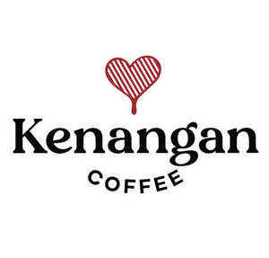

Trade Mark Journal No.2025/024 13 June 2025
UK00004209481 27 May 2025 (30,43)

- Class 30
- Thickener for cooking food; rice; popcorn; chocolate; brownies; oatmeal porridge; macaroni salad with peanut sauce (gado-gado) seasoning; pasta salad with peanut sauce (gado-gado) seasoning; rice salad with peanut sauce (gado-gado) seasoning; peanut seasoning; seasoning pastes; all-purpose seasoning; ready-made seasoning; seasonings containing monosodium glutamate or hydrolyzed protein extracts derived from fish, meat or vegetables; chicken sandwiches; honey products; processed corn; ginger juice beverages being ginger tea; cocoa; soy sauces; kaempferia galanga powder; maize flakes; corn chips; coriander powder (spice); coffee powder; coffee, tee, cocoa and artificial coffee; cakes; pastry and confectionery; cakes and tarts, confectionery (including frozen); pastries; turmeric; black pepper powder (spice); alpinia galanga powder; honey for human consumption; small prepared meals and snacks consisting mainly of rice, pasta and or noodles; snack bars containing a mixture of grains, nuts and dried fruit (confectionery); thick pancake (martabak); noodles; sago noodles; coffee-based beverages containing milk; red ginger tea; piccolo; mocha; moringa coffee ginger drink; mochaccino; muesli; sweet and spicy (empal) meat rice; seafood fried rice; beef stew rice; rice, pasta and noodles; rice box with chicken, fish or vegetables; pasta; pasta combined in unitary packages with edible seeds, pulses, legumes, or vegetables; thickener for tofu; seasonings other than essential oils; candy; bread, pastries and confectionery; sasagun (traditional snack made from rice flour mixed with coconut and then roasted with brown sugar or white sugar); sauces for pasta and rice; pasta-based prepared meals; preparations for making chocolate drink with milk in powder form; dried lemongrass (spice); cheese straws; paste made from preserved fermented yellow soybeans (tauco); wafer cookies; brownie dough; frozen brownie dough; allspice; tamarind [condiment]; baguettes [french loaves]; ice milk bars; rice vermicelli; vermicelli [noodles]; biscuit; malt biscuits; biscuits; brownies; chocolate powder; cinnamon powder [spice]; rice pulp for culinary purposes; seasonings; condiments; piper retrofractum vahl (spice); puffed corn snacks; cloves (spices); dairy, nuts or fruit chocolates; chocolates; crepes; vinegars; salad dressings containing cream; edible fruit ices; ice cream; dairy ice cream; ice milk; edible ices; essences for foodstuffs, except etheric essences and essential oils; salt; sugar; palm sugar; powdered sugar; flavoured sugar confectionery; dates sugar; hot dogs [sandwiches], meat pies; maize roasted; powdered ginger for use as a spice; preserved ginger [condiment]; fruit jellies [confectionery]; jeotgal [korean condiment made from salted and fermented seafood]; cardamom (spice); cinnamon [spice]; corn tortilla chips; kettle corn [popcorn]; coffee; instant coffee; cake; cookies; turmeric for food; flat noodle (kwetiau); pimiento [condiment]; pepper powder (spice); honey; boxed lunches consisting of rice, with added tempura meat, tempura seafood, tempura egg, tempura vegetables or tempura mushroom; food made of corn; processed cereal-based food to be used as a breakfast food, snack food or ingredient for making other foods; rice-based snack food; corn-based snack foods; noodle-based snacks; maize-based snack food; extruded corn snacks; rice-based prepared meals; noodle-based prepared meals; macaroni; mayonnaise; pepper (spice); flour noodles; coffee-based beverages; tea-based beverages; tea-based beverages with fruit flavoring; beverages with a chocolate base; beverages with a cocoa base; cappuccino; latte; hot ginger tea; green tea latte; wheat vermicelli; molasses for food; mustard; meat pies; nutmeg (spice); tamarind paste; gum paste [confectionery]; fruit flavorings, other than essential oils, for foodstuffs; fruit flavorings, other than essential oils, for beverages; edible adhesives for confectionery decorating; candy bars; gum sweets; bubble gum [confectionery]; condiment of the fermented fish or shrimp (petis); pizzas; popcorn and corn-based snack foods; bakery products for food; puddings; leaven; yeast for culinary purposes; yeast; bagels; buns; whole wheat roti bread; toast; bread; sago; hot sauce; sauces; brown sauce; meat gravies; mushroom sauce; honey mustard sauces; cereal bars; cereals prepared for human consumption; ready-to-eat cereals; date syrup [natural sweetener]; maple syrup; pancake syrup; topping syrups; vermicelli; spaghetti; spaghetti bolognese; tea; instant tea; turmeric tea; rice flour; seasoning powder; flour and preparations made from cereals; wholemeal flour; corn flour; corn starch for culinary purposes; nut flours; mung bean flour; potato flour; cake flour; quinoa flour; bread flour; tapioca flour; wheat flour; flour; shrimp paste [sauces]; chocolate fondue; vanillin [vanilla substitute]; wafers; rolled wafers [cookies]; frozen yogurt [confectionery ices]. .
- Class 43
- Hotel and resort services; coffee shop services; providing beverages; restaurant, bar, cocktail lounge, café, coffee shop, and snack bar services; coffee cafe; hospitality services; hotels; snack bar services; providing food and beverages; travel agency services for booking and making accommodation and hotel reservations; catering services; restaurant services; bar services; coffee bar and coffee house services (provision of food and drink); hotel services; hotel, motel and resort services; café and cafeteria services; coffee-house and snack-bar services; reservation and booking services for hotels, restaurants and holiday accommodation; serving food and drink for guests in restaurants; provision of food and drinks for consumption; provision of hotel room reservations and temporary accommodation for tourists and vacationers through the website; providing conference, exhibition and meeting venues; providing banquet and social function venues for special occasions; rental of temporary accommodation in the nature of villas and bungalows; rental of function rooms for wedding receptions; rental of venue for events and providing information relating thereto; reservation of hotel rooms and temporary lodging; self-service restaurants.
KENANGAN BRANDS PTE. LTD.
Representative: Hepworth Browne